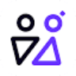

Google GeminiИИ-ассистент
Gemini помогает обсуждать тексты, искать сведения и работать с визуальными материалами. В приложении есть исследовательские и творческие режимы; доступ в продуктах Google проверяется отдельно.
Раздел «ИИ-ассистент»: варианты ИИ для этой задачи, описания возможностей и переходы к обзорам. Сравните несколько решений на одинаковом примере.
Перед началом задачи соберите цель, исходный материал и критерий готовности. Молекула поможет оформить задание; доступ к вашим системам и выполнение действий требуют отдельной настройки.
Помоги составить бриф на подготовку инструкции сотруднику: исходный регламент ниже, читатель новичок, результат до одной страницы. Укажи необходимые уточнения и критерии проверки текста.

Gemini помогает обсуждать тексты, искать сведения и работать с визуальными материалами. В приложении есть исследовательские и творческие режимы; доступ в продуктах Google проверяется отдельно.
Guru предоставляет разговор с ИИ через WhatsApp и обрабатывает сообщения на естественном языке. Пользователь может обсуждать разные темы в привычном мессенджере. Сервис предлагает варианты доступа с разными условиями, сохраняя общий сценарий обмена сообщениями с чат-ботом на повседневные вопросы.
Сравнивать «KhojGPT.com» с другими инструментами раздела «Чат-боты и ассистенты» удобнее на одинаковом исходном материале.
Сравнивать «Kippy Language Tutor» с другими инструментами раздела «Образование» удобнее на одинаковом исходном материале.
LeinGPT объединяет текстовые модели и генерацию визуальных материалов в одном интерфейсе. Также доступны музыка и озвучивание. Российский агрегатор работает через веб и Telegram, а расчёты в рублях дополняют использование разных ИИ-инструментов при подготовке выбранного пользователем текстового или медиаматериала.
Сравнивать «MindMac» с другими инструментами раздела «Чат-боты и ассистенты» удобнее на одинаковом исходном материале.
Olle - AI Assistant предлагает средства ИИ-помощи пользователям Mac с настройкой текстовых запросов. Предусмотрена автономная библиотека подсказок и хранение данных. Основное направление касается организации собственного набора инструкций, где повторяющиеся обращения можно держать вместе и использовать в разных рабочих задачах вместо составления каждого запроса заново.
Для «TalkPilot» сначала определите свою задачу и требуемый результат. Карточка относится к направлению «Чат-боты и ассистенты».
Tettra организует внутреннюю базу знаний компании с ИИ-функциями. В наборе предусмотрены подготовка документов, работа с отобранной информацией и помощь через бота Kai. Продукт связывает накопление рабочих сведений с обращением команды за ответами, чтобы содержание базы использовалось в текущих задачах, а не только хранилось отдельными страницами.
Для «TheB AI» сначала определите свою задачу и требуемый результат. Карточка относится к направлению «Генерация изображений».
VLEX AI собирает текстовые, визуальные и голосовые модели в общем веб-интерфейсе. Пользователь обращается к разным нейросетям из одного аккаунта, выбирая инструмент для нужного материала. Сервис ориентирован на российскую аудиторию и поддерживает оплату картой российского банка.
Для «Adept» сначала определите свою задачу и требуемый результат. Карточка относится к направлению «ИИ-ассистент».
Для «Afforai» сначала определите свою задачу и требуемый результат. Карточка относится к направлению «Чат-боты и ассистенты».
«AI Persona Chat» представлен в разделе «Чат-боты и ассистенты». При выборе проверьте нужную операцию и условия работы с результатом.
«ai_licia» получает речевую запись из текста.
Для «AIPal» сначала определите свою задачу и требуемый результат. Карточка относится к направлению «Чат-боты и ассистенты».
«Alfred AI» представлен в разделе «Продуктивность». При выборе проверьте нужную операцию и условия работы с результатом.
Для «Aya» сначала определите свою задачу и требуемый результат. Карточка относится к направлению «Чат-боты и ассистенты».
Blackbox помогает разработчику находить код и дополнять программные фрагменты на разных языках. Инструмент работает с репозиториями и преобразует словесные запросы в код. Дополнительная возможность связана с извлечением исходного кода из видеоматериалов и PDF, чтобы использовать обнаруженный фрагмент в дальнейшем.
«ChatGPT Android» представлен в разделе «Чат-боты и ассистенты». При выборе проверьте нужную операцию и условия работы с результатом.

Cursor помогает разбирать репозиторий и менять связанные файлы через ИИ-агента в редакторе. Правила проекта и контекст текущей задачи направляют работу помощника; результат проверяют по готовому патчу.
«Dasha» представлен в разделе «ИИ-ассистент». При выборе проверьте нужную операцию и условия работы с результатом.
«Delphi» представлен в разделе «Чат-боты и ассистенты». При выборе проверьте нужную операцию и условия работы с результатом.
Для «DigitalSidekicks» сначала определите свою задачу и требуемый результат. Карточка относится к направлению «Маркетинг».
Сравнивать «evaapp AI» с другими инструментами раздела «Чат-боты и ассистенты» удобнее на одинаковом исходном материале.
Для «Fermat» сначала определите свою задачу и требуемый результат. Карточка относится к направлению «ИИ-ассистент».
Fluxy AI объединяет создание контента с инструментами записи экрана, ведения дневника и подготовки информационных бюллетеней. Для сравнения выберите одну конкретную задачу, например черновик выпуска по заметкам. Проверьте полноту исходных сведений и удобство дальнейшей правки; несколько разных функций в одном сервисе не делают их одинаково подходящими для проекта.
Сравнивать «GetInference AI Radar» с другими инструментами раздела «Образование» удобнее на одинаковом исходном материале.
Gradient AI предоставляет средства для подготовки настраиваемых систем ИИ на разных языках. Набор возможностей охватывает экспертные системы, API и документация, а также общение через сообщество. Платформа объединяет работу с выбранной конфигурацией ИИ и программным доступом к ней для дальнейшего использования.
HandyAI предоставляет разговорный интерфейс и средства генерации текста и изображений с участием ИИ. В приложении доступны библиотеки запросов, а также языковые и визуальные модели. Документация дополняет эти инструменты, связывая подготовку пользовательского запроса с рассмотрением возможного способа получения нужного материала.
«InputAI» помогает организовать разговор с чат-ботом.
Сравнивать «Iris» с другими инструментами раздела «Чат-боты и ассистенты» удобнее на одинаковом исходном материале.
Сравнивать «Kindroid» с другими инструментами раздела «Чат-боты и ассистенты» удобнее на одинаковом исходном материале.
Сравнивать «local AI» с другими инструментами раздела «ИИ-ассистент» удобнее на одинаковом исходном материале.
Сравнивать «Lore» с другими инструментами раздела «ИИ-ассистент» удобнее на одинаковом исходном материале.
Offline ChatGPT позволяет работать с большой языковой моделью без постоянного соединения с сетью. Продукт поддерживает Windows и Linux, а также Mac. Во время установки требуется распаковать модель, после чего пользователь может обращаться к локальному разговорному интерфейсу в подготовленном окружении компьютера.
«Omnigpt» представлен в разделе «Чат-боты и ассистенты». При выборе проверьте нужную операцию и условия работы с результатом.
OpenCat представляет собой клиент для общения с ИИ на iOS и macOS. В исходном описании указано подключение к внешним механизмам, включая OpenAI и Azure. Перед работой уточните настройки выбранного подключения и доступные модели; удобство клиентского интерфейса не определяет само по себе условия обработки запроса у провайдера.
Для «Opera AI Prompts» сначала определите свою задачу и требуемый результат. Карточка относится к направлению «Продуктивность».
«Papers GPT» представлен в разделе «Данные и аналитика». При выборе проверьте нужную операцию и условия работы с результатом.

Personal AI предоставляет инструменты для подготовки и управления ИИ-помощником. Продукт использует обработку естественного языка и разговорные средства. Среди описанных задач есть планирование встреч и ответы клиентам, связывающие действия помощника с пользовательским сценарием организации общения и повседневных рабочих запросов.
«Rapidreply» представлен в разделе «Email». При выборе проверьте нужную операцию и условия работы с результатом.
«StudyX AI» помогает разбирать учебный материал.
Для «Txt Muse» сначала определите свою задачу и требуемый результат. Карточка относится к направлению «Тексты и контент».
Для «WhyBot» сначала определите свою задачу и требуемый результат. Карточка относится к направлению «ИИ-ассистент».
Думатель отвечает на вопросы по загруженным материалам и подготавливает отчёты с таблицами. Российский сервис работает с документами и сканами, а также аудио и видео. Индексирование и RAG связывают ответы с исходным содержанием; в результатах предусмотрены ссылки на первоисточник.
Страница 7 из 7